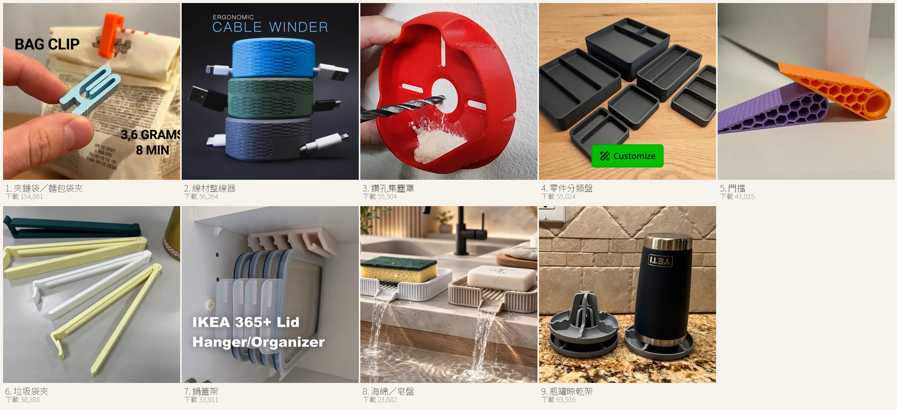
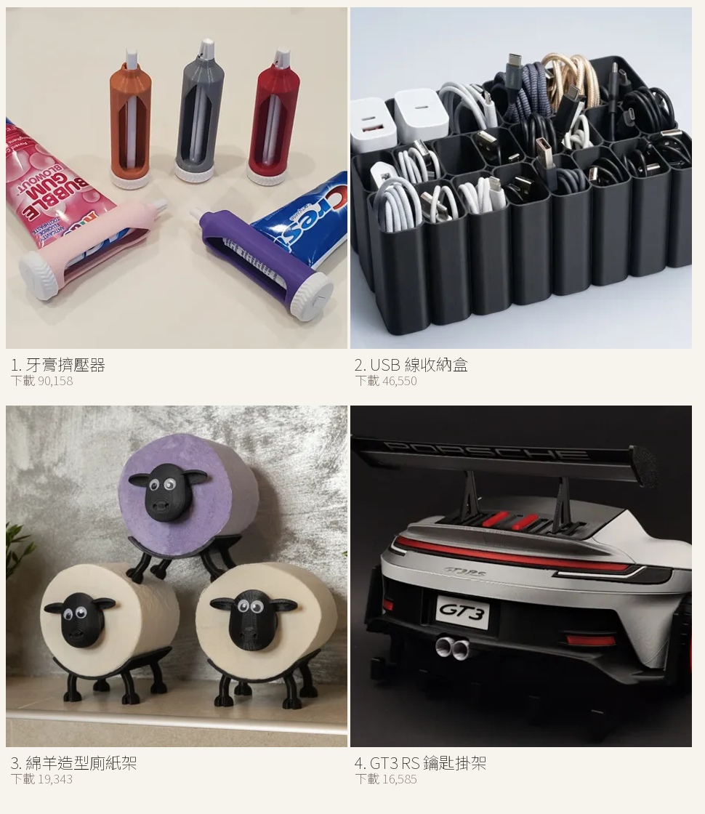
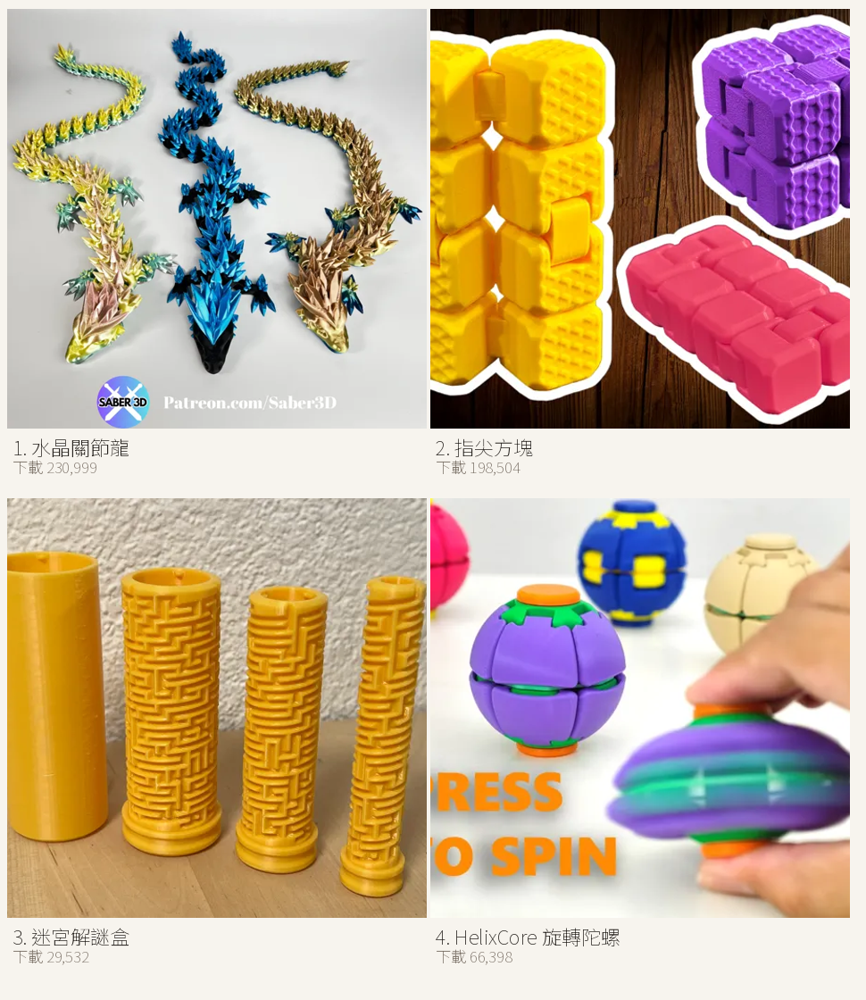
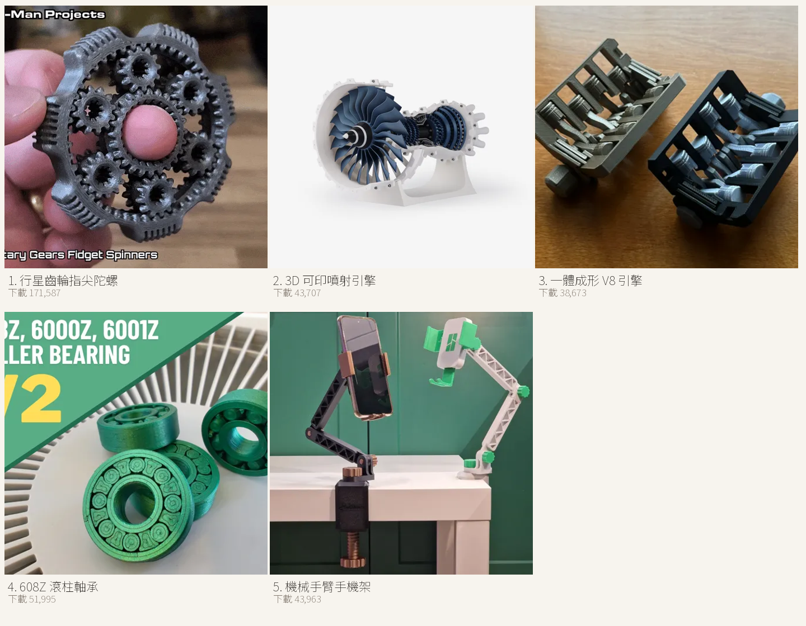
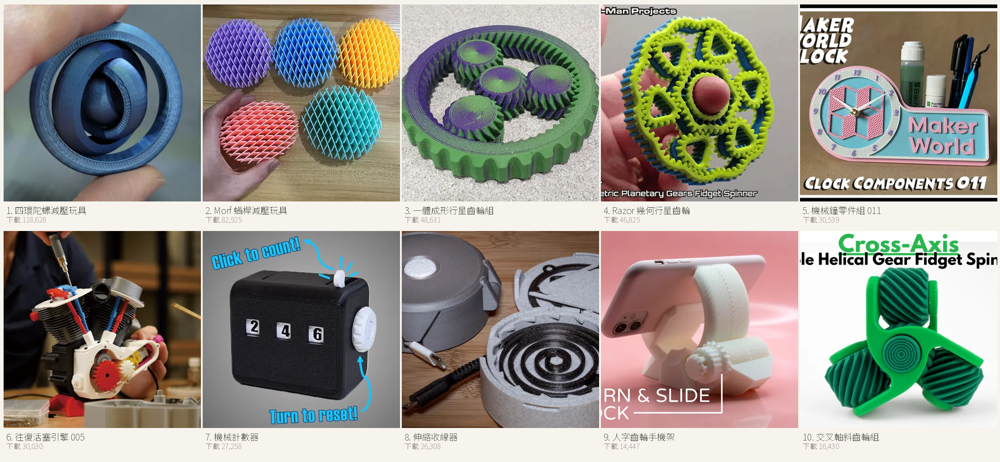
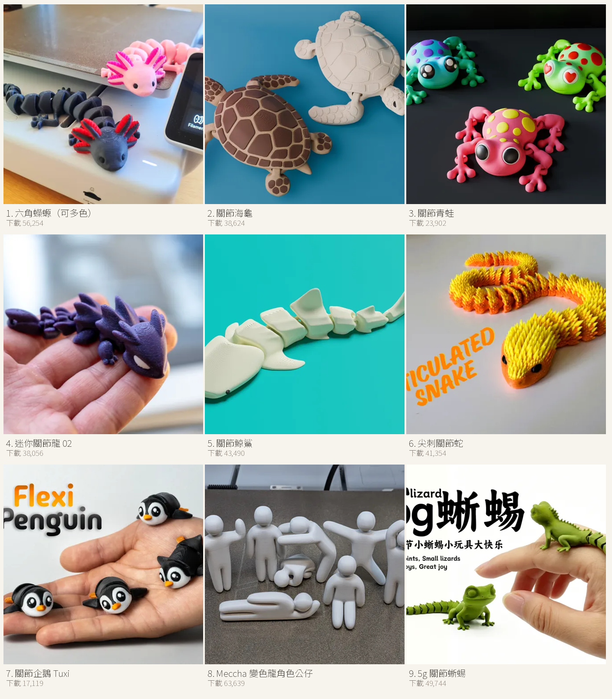
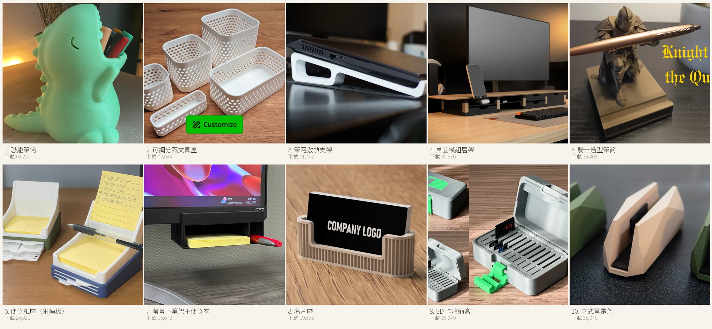
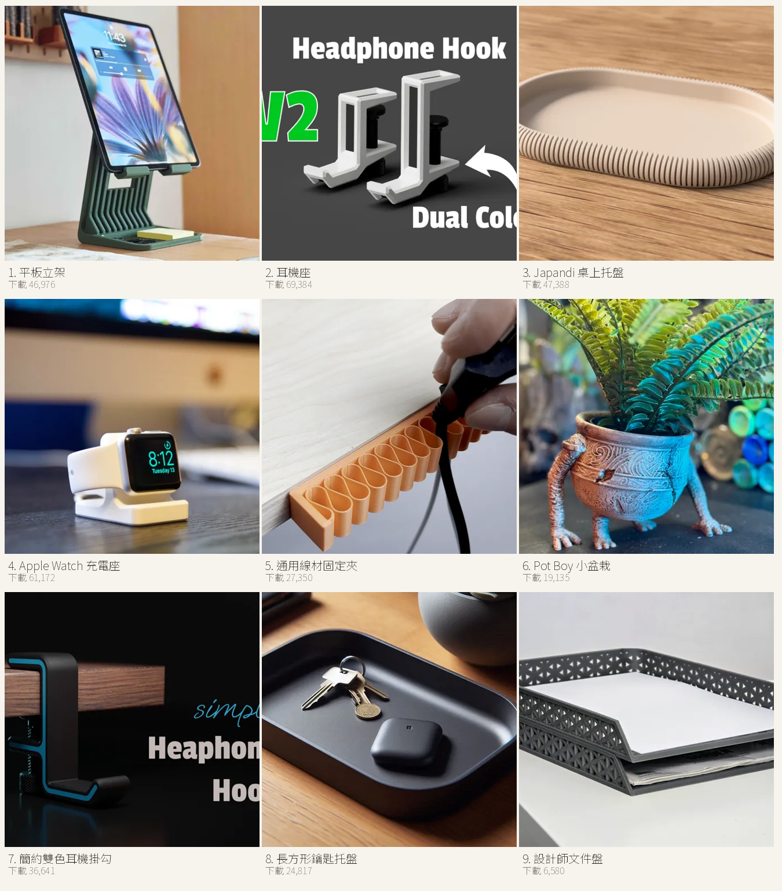

3D 列印模型總整理：實用・玩具・機械・關節動物
剛買 Bambu Lab A1，第一件事不是找最酷的模型，而是找「印壞了也不心痛、印好了天天用」的那幾件。這篇把五大類共 80 件整理在一起，每一件都附 MakerWorld 的實際下載次數、原始連結，以及在 A1 上印它要注意什麼、參數怎麼微調。
整理日期 2026-11-08｜下載數為 MakerWorld API 當日實測值
一、先講怎麼挑，不要一開始就挑最難的
新手最常犯的錯，是拿一個 12 小時、需要支撐、還要組裝的模型當第一件。失敗一次就會覺得「這台機器不好用」。
| 階段 | 挑什麼 | 原因 |
|---|---|---|
| 第 1–3 件 | 30 分鐘內、免支撐、平底 | 先確認機器沒問題，建立信心 |
| 第 4–10 件 | 實用件（收納、掛勾、夾具） | 失敗成本低，家裡真的用得到 |
| 之後 | 一體成形關節、機構件 | 需要尺寸準度與冷卻都穩定 |
二、實用：解決生活麻煩的九件
這一批的共同點是「買不到剛好合的尺寸」，所以只能印。

- 夾鏈袋／麵包袋夾154,861 次下載Mini Bag Clip注意卡扣薄、拆裝次數多會斷
微調0.16mm 層高、填充 30%；常開關就改用 PETG - 線材整線器56,264 次下載Ergonomic Cable Winder注意夾口尺寸固定，線徑差太多會夾不住
微調依實際線徑縮放 95–105%，填充 25% - 鑽孔集塵罩55,504 次下載Drill Dust Collector注意貼牆面不平會漏粉塵
微調免支撐、外壁 3 圈，背面貼 1mm 海綿膠條 - 零件分類盤55,024 次下載Parametric Sorting Tray注意多個疊放時公差累積
微調XY 補償 −0.05mm、0.2mm 層高 - 門擋43,035 次下載Door Stopper注意磁磚或木地板止滑差
微調底面貼 TPU 墊、填充 40% - 垃圾袋夾38,388 次下載Bag Closure Clips注意長時間夾緊會彈性疲乏
微調PETG 印、填充 20%；要更耐用可 70°C 退火 30 分鐘 - 鍋蓋架33,911 次下載Ikea 365+ Plastic Lid Hanger / Organizer注意櫃門厚度不一，掛不上
微調先量門板厚度，掛勾孔位放大 0.3mm - 海綿／皂盤23,682 次下載Japandi Drain Tray – Sponge & Soap Holder注意平底積水、容易發霉
微調PETG 印、3 層外壁，底部自行加 2mm 排水孔 - 瓶罐晾乾架63,936 次下載Stackable Bottle Drying Rack注意高瓶重心不穩
微調填充 25%、底面貼矽膠墊
三、再補四件日常小麻煩
下載數都在一萬五以上，代表不是小眾需求。

- 牙膏擠壓器90,158 次下載Ratcheted Toothpaste Tube Squeezer注意齒輪卡死就轉不動
微調0.16mm 層高、XY −0.05mm，PLA 即可 - USB 線收納盒46,550 次下載USB cable organizer Box tray IPhone Samsung注意手機含殼放不進去
微調先量機身尺寸再縮放，內壁 1.6mm - 綿羊造型廁紙架19,343 次下載Sheeptastic! Toilet Paper Sheep Holder - FITS ALL!注意捲筒軸太緊、換紙卡卡
微調軸徑 +0.2mm、免支撐 - GT3 RS 鑰匙掛架16,585 次下載GT3 rs key hanger注意掛勾處受力集中會斷
微調填充 40%、外壁 4 圈，PETG 更保險
四、玩的：印完就能玩的四件
關節類與減壓類，適合當「給小孩看」的第一件。

- 指尖方塊198,504 次下載Fidget Cube Toy: Angled注意鉸鏈黏死就整顆報廢
微調0.16mm 層高、XY −0.05mm、不開支撐 - 迷宮解謎盒29,532 次下載Russian Maze Puzzle Gift Box - HARD注意軌道公差太大會鬆、太小會卡
微調0.2mm 層高、XY −0.03mm，先印單層測試片 - HelixCore 旋轉陀螺66,398 次下載HelixCore – Press-to-Spin Squishy Ball注意球面接縫明顯
微調0.12–0.16mm、外壁降速到 50mm/s
五、機械：會動的機構件
這類最能看出機器精度：齒輪咬合、軸承間隙、一體成形連桿。

- 行星齒輪指尖陀螺171,587 次下載Planetary Gears Finger Fidget Spinners注意齒輪咬合太緊轉不動
微調0.16mm、XY −0.05mm、填充 30% - 3D 可印噴射引擎43,707 次下載3D Printable Jet Engine注意大量懸空，支撐很難拆
微調支撐只觸熱床、0.2mm 層高、風扇全開 - 一體成形 V8 引擎38,673 次下載Print-in-place v8 engine fidget注意連桿間隙不對就卡死
微調0.16mm、XY −0.05mm、外壁 40mm/s - 608Z 滾柱軸承51,995 次下載608Z, 6000Z, 6001Z Roller Bearing V2注意間隙極敏感，差 0.05mm 就轉不動
微調XY 從 −0.05mm 起調、0.12mm 層高、滾道不要上油 - 機械手臂手機架43,963 次下載Mechanical Phone Holder Desk Mounted Stand Arm注意關節鬆緊差很多
微調0.2mm、XY −0.03mm，關節件用 PETG
第二批機械件：重點在「齒輪咬合」與「彈片壽命」，同一參數印三顆就會知道 XY 補償該往哪邊調。

- 四環陀螺減壓玩具118,628 次下載4 Ring Gyro Fidget注意同心環間隙要求高，差 0.05mm 就卡
微調0.16mm、XY 補償 −0.05mm、外壁 40mm/s - Morf 蝸桿減壓玩具82,925 次下載Fidget Morf Worm注意蝸桿與齒面容易黏死
微調0.16mm、XY −0.05mm，先印最小那顆試手感 - 一體成形行星齒輪組48,631 次下載Print in Place Planetary Gear Spinner注意行星輪咬合過緊就整組報廢
微調0.16mm、XY −0.05mm、填充 30% - Razor 幾何行星齒輪46,825 次下載"Razor" Geometric Planetary Gears Fidget Spinner注意多層齒輪疊合，公差累積
微調XY −0.05mm，外壁降到 35mm/s - 機械鐘零件組 01130,539 次下載Clock Components 011 - Maker World Clock注意小件極多，組裝順序不能錯
微調0.12mm、XY −0.05mm，先印單一齒輪組 - 往復活塞引擎 00530,030 次下載Engine Model 005注意連桿與曲軸間隙太小會卡
微調0.16mm、XY −0.05mm，氣缸內壁 3 圈 - 機械計數器27,258 次下載Mechanical Counter - all printed parts!注意棘爪彈片斷了就歸零
微調0.16mm，彈片處填充 100% - 伸縮收線器26,308 次下載Retractable Cable Organizer - With Stop注意發條彈簧張力過大會爆開
微調PETG 印發條、0.16mm，先繞 2 圈試張力 - 人字齒輪手機架14,447 次下載Herringbone Gear Phone Stand Pork3D by Pork3D.com注意齒輪咬合與手機重量要平衡
微調0.2mm、XY −0.03mm，填充 25% - 交叉軸斜齒輪組16,430 次下載Cross-Axis Triple Helical Gear Fidget Spinner注意三個齒輪交叉咬合，公差要求高
微調0.16mm、XY −0.05mm，先單獨試轉
六、第二批 12 件：收納、玩具、機構
如果你已經印完前面幾類，這批可以往「家裡每個角落」擴散。

- 桌下線材收納24,893 次下載Clean Cable Management Organizer Clip注意桌板厚度不合就夾不住
微調先量桌板，螺絲孔放大 0.3mm - 強力洗衣夾20,040 次下載The Ultimate 3D Printed Clip注意彈簧溝反覆受力易裂
微調PETG、填充 40%、0.2mm - 廚房調味包收納14,163 次下載Kitchen Packet Organizer / Baking Spice Box注意抽屜深度不合放不進
微調依抽屜內寬縮放，免支撐 - 旋轉收納盤21,060 次下載Spinning Organizer | Rotating Storage Box注意軸心太緊轉不動
微調軸徑 +0.2mm、XY −0.03mm - 關節貓玩具62,323 次下載Flexi Holding Cat (Print-in-place)注意尾巴與耳朵細節易斷
微調0.16mm、外壁降到 40mm/s - 彈珠軌道36,897 次下載Marble Run 003注意接頭高低差會卡珠
微調0.2mm，每節印完先用手試珠再組 - 小機械手32,622 次下載Little Robot Hand注意指節黏死、掰不開
微調0.16mm、XY −0.05mm；先用 0.2mm 版本試手感 - 喀噠開關玩具18,396 次下載Clicky Clicker with *Click* Sound注意手感偏硬或沒聲音
微調0.16mm，彈片處填充 100% - 高速螺旋槳發射器56,313 次下載High Speed Propeller Launcher注意高速旋轉件，組裝不良會射出
微調軸位 XY −0.05mm；不要加大馬達電壓 - 齒輪產生器（可調參數）29,096 次下載Gear Generator - Parametric Gears & Racks注意參數輸入錯誤會生成咬合不良的齒輪
微調模數 1–1.5、XY −0.05mm、外壁 4 圈 - 陀飛輪機構15,020 次下載TT Furious Tourbillon注意小件極多、組裝順序不能錯
微調0.12mm、XY −0.05mm；先只印一組齒輪試運轉 - 翻頁日曆機15,916 次下載"Date Keeper" Perpetual Flip Calendar注意彈簧與卡榫是弱點
微調0.16mm，彈片用 PETG
七、一體成形關節動物
全部都是 print-in-place：印完不用組裝，直接能擺動。這類同時考驗尺寸補償與冷卻。

- 水晶關節龍231,008 次下載Articulated Crystal Dragon by Saber3D注意背刺與角很脆
微調0.16mm、外壁 40mm/s、XY −0.05mm - 關節鯊魚116,248 次下載Articulated Shark注意尾鰭大片懸空
微調免支撐、懸空處局部降速到 30mm/s - 迷你章魚135,165 次下載Cute Mini Octopus注意觸手細、容易拉絲
微調0.12–0.16mm、線材先烘乾、回抽 +1mm - 骷髏暴龍109,632 次下載Flexi Skeleton T-Rex Dinosaur注意肋骨薄，拆支撐會斷
微調0.16mm、外壁 3 圈、支撐只在熱床 - Cute Snakey 伸縮蛇94,548 次下載Cute Snakey - Free to Sell - No AMS注意長條連續路徑容易拉絲
微調線材乾燥、回抽 +1mm、外壁 40mm/s - Shadowcoil 關節龍90,465 次下載Shadowcoil - Articulated Dragon注意龍角與背鰭細節小
微調0.12mm、外壁 35mm/s - 關節蜥蜴 v260,656 次下載Articulated Lizard v2注意腳趾極小易斷
微調0.12–0.16mm、XY −0.03mm - 迷你鯊魚80,532 次下載Mini Shark Articulated注意一次排多隻會互相黏住
微調排列間距至少 5mm、關閉「合併同層」 - 模組化關節蟹26,694 次下載Modular Flexi Crab No AMS Required注意多色換料浪費大
微調沒有 AMS 就分件印，XY −0.05mm
第二批：換不同物種，包含體型更小的入門款（5g 蜥蜴只要 15 分鐘）。

- 六角蠑螈（可多色）56,254 次下載Articulated Axolotl (Multicolor)注意外鰓是最容易斷的地方
微調外壁 30mm/s、0.12mm、XY −0.05mm - 關節海龜38,624 次下載Articulated Sea Turtle (singlecolor & multicolor)注意龜殼頂面紋理容易醜
微調0.16mm，開 Ironing（頂面熨燙） - 關節青蛙23,902 次下載Cute articulated frog注意貼床面積小，容易中途倒
微調Brim 5mm、第一層 0.25mm、底板 60°C - 迷你關節龍 0238,056 次下載Mini Articulated Dragon 02注意尺寸極小、間隙吃掉整件功能
微調0.08–0.12mm、XY −0.03mm - 關節鯨鯊43,490 次下載Articulated Whale Shark注意長身兩端易翹
微調Brim、底板降 5°C、前 10 層降速 - 尖刺關節蛇41,354 次下載Spiked Articulated Snake注意尖刺在冷卻不足時會斷
微調0.16mm、風扇 100%、別放冷氣口 - 關節企鵝 Tuxi17,119 次下載Tuxi the penguin – Articulated & keychain注意鑰匙圈孔常印成橢圓
微調孔徑 +0.3mm、孔位處降速 - Meccha 變色龍角色公仔63,639 次下載Meccha Chameleon Characters - All OG Poses (No AI)注意姿勢件多、拆件費時
微調一次印 3–4 隻、間距 4mm、0.16mm - 5g 關節蜥蜴49,744 次下載5g蜥蜴 lizard-关节可动蜥蜴-仅5g注意極輕，第一層沒貼牢就整個被噴嘴帶走
微調Brim 3mm、XY −0.03mm、首層 0.25mm
八、辦公室桌上小物
桌面整理這一類的重點是「尺寸要先量」：抽屜寬、便條紙寬、螢幕厚度、筆電厚度，量好再印才不會白印。

- 恐龍筆筒63,251 次下載Dinosaur T-REX Pencil Holder注意造型件，細節多但不承重
微調0.2mm 層高、免支撐，填充 15% - 可調分隔文具盒70,684 次下載Organizer Box - Parametric Storage Bin注意尺寸可自訂，容易印完才發現不合抽屜
微調先量抽屜內寬再生成；0.2mm、免支撐，可無限拼接 - 筆電散熱支架51,742 次下載笔记本电脑支架 Laptop Stand注意PLA 長期承重會慢慢彎
微調PETG 印、填充 30%、外壁 3 圈 - 桌面模組層架35,936 次下載Modular Desk Shelf Fully Printed • Screwable Addon注意承重不足會下垂
微調填充 25%、外壁 4 圈、底面加防滑墊 - 騎士造型筆筒34,808 次下載Knight of the Quill Portapenne Cavaliere Medievale注意細部懸空多，支撐難拆
微調支撐只觸熱床、0.16mm、外壁 35mm/s - 便條紙座（附模板）24,821 次下載Sticky Note Holder with Stencils注意便條紙尺寸各牌不同
微調先量便條紙寬度再縮放，內側預留 1mm - 螢幕下筆架＋便條座15,672 次下載Under Monitor Pen / Sticky Note Holder注意貼合面尺寸固定，螢幕厚度不同會鬆
微調背面貼 1mm 雙面膠、免支撐 - 名片座19,556 次下載Business Card Holder 注意頂面紋路容易醜
微調0.16mm + Ironing（頂面熨燙） - SD 卡收納盒16,949 次下載SD card storage box注意卡槽公差差 0.1mm 就太鬆或太緊
微調XY 補償 −0.05mm，先印一格試鬆緊 - 立式筆電架35,070 次下載Vertical laptop stand注意夾口會刮傷機身
微調夾口貼 1mm 泡棉、填充 30%
第二批辦公室：這批的共同點是「尺寸取決於你桌上的東西」，量好再印。

- 平板立架46,976 次下載iPad / Tablet Stand Riser注意角度固定，平板太厚會卡
微調先量平板厚度，夾口 +0.5mm - 耳機座69,384 次下載Headphone holder modern Design注意頭帶寬度不一
微調0.2mm、填充 20%，底座加重避免傾倒 - Japandi 桌上托盤47,388 次下載Japandi Tray 注意底面大、容易翹
微調Brim 5mm、底板 60°C、0.2mm - Apple Watch 充電座61,172 次下載Apple Watch Charging Stand注意充電盤孔徑要準
微調孔徑 +0.3mm、0.16mm，先用舊充電盤試 - 通用線材固定夾27,350 次下載universal cable holder V1注意夾口與線徑不合就滑動
微調依線徑縮放、PETG 較耐用 - Pot Boy 小盆栽19,135 次下載Pot Boy Planter注意底部無排水孔會爛根
微調自行加 3mm 排水孔、PETG 或 PLA 內襯 - 簡約雙色耳機掛勾36,641 次下載Simple Headphone Hook dual color注意雙色需要換料
微調無 AMS 可分件印、0.2mm - 長方形鑰匙托盤24,817 次下載Modern Rectangular Key Tray注意淺盤容易翹邊
微調Brim 3mm、底板 60°C、0.2mm - 設計師文件盤6,580 次下載Designer Paper Tray (Stackable, A4 & 8.5"x11")注意堆疊公差與承重
微調0.2mm、填充 25%、外壁 3 圈
九、A1 的列印參數（這幾類都適用）
| 項目 | 建議 |
|---|---|
| 噴嘴／層高 | 0.4mm／0.2mm（關節類用 0.16mm 更滑順） |
| 填充 | 15%（機構件 25%，齒輪類 40%） |
| 支撐 | 只有懸空超過 45° 才開；關節動物一律不開 |
| 列印板 | 原廠 PEI 紋理板，不用膠水 |
| 孔徑補償 | 要穿軸的孔，孔徑放大 0.2–0.3mm |
| 環境 | 不要放冷氣出風口或窗邊，A1 無封箱，風一吹就翹邊 |
十、最常見的三種失敗，與對應修法
| 症狀 | 原因 | 修法 |
|---|---|---|
| 第一層有空隙、邊緣翹起 | 床面有油、Z 偏移太低 | 酒精擦板、重跑自動床平 |
| 關節黏死、掰不開 | 間隙不足或流量過高 | 層高降到 0.16mm、流量 −2% |
| 側面拉絲嚴重 | 線材受潮、溫度過高 | 換乾燥線材、降 5–10°C |
十一、資料來源與授權
所有模型都來自 MakerWorld，下載數以 MakerWorld 公開 API 於 2026-11-08 取得。各模型授權不同（多為 CC BY-NC 或 MakerWorld 專屬授權），下載前請在該頁確認授權條款；本文只整理連結，不轉載模型檔案。